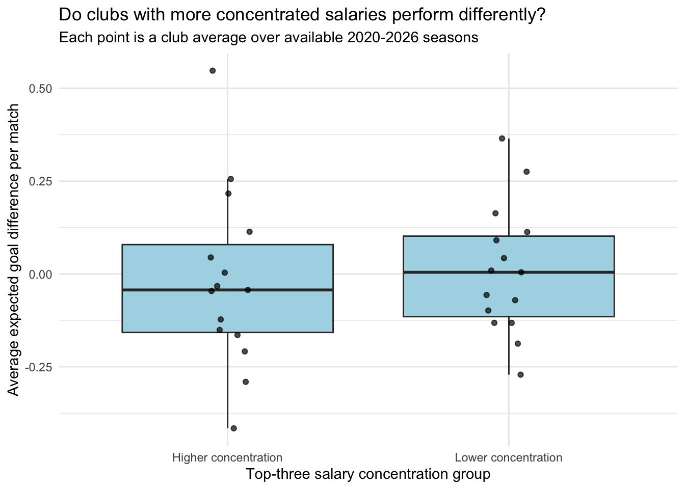
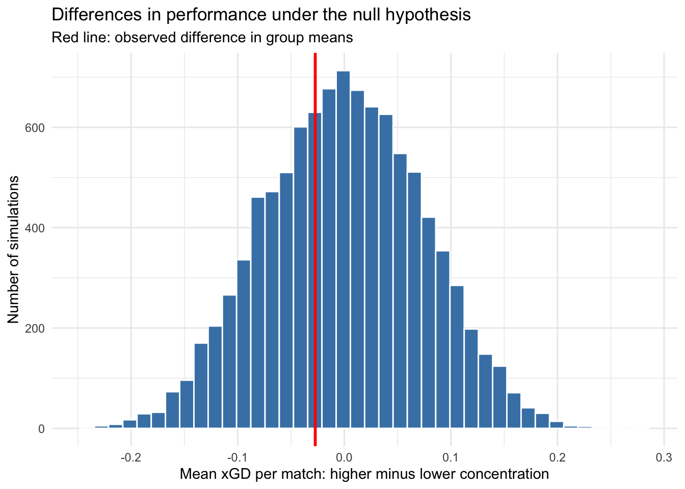

Does spending a larger share of the payroll on three players go along with better team performance? To look at this, I will find how much of each MLS club’s guaranteed compensation goes to its three highest-paid players. Using data from 2020 to 2026, I will compare average expected goal difference per match for clubs with higher salary concentration and clubs with lower salary concentration. I will then shuffle the performance values to see whether the difference could reasonably show up by chance.
Understanding the data
The salary data come from the MLS Players Association (MLSPA), through American Soccer Analysis (ASA). ASA also provides the expected goals data. Each salary row is a player listed for a club in one season’s release; each performance row is a club-season pairing, such as NYCFC in 2025. I join them using team ID and year.
Guaranteed compensation includes base salary and annualized guaranteed bonuses and other guaranteed compensation. It differs from the budget charge, the amount counted toward the league salary budget. I measure salary concentration as the three highest-paid players’ combined compensation divided by total club compensation. These players are not necessarily official designated players (DPs).
Expected goals (xG) measure scoring-chance quality using estimated probabilities that shots become goals. Expected goals conceded measure the chances allowed to opponents. Expected goal difference per match (xGD per match) is xG for minus xG against, divided by matches played. This covers attack and defense while accounting for different numbers of matches.
Prepare the data
I calculate total compensation and compensation for the top three players in each club-season, then join these summaries to regular-season performance. The salary file uses only the latest available release each year to avoid counting players twice.
The table shows the number of clubs and range of matches each year. The 2020 season was shortened, and 2026 is incomplete, so some averages use fewer matches. Salary lists are also snapshots, rather than records of who played in every match.
Make the two groups
I average salary concentration and xGD per match across each club’s available seasons, giving each season equal weight. This leaves one row per club instead of treating its repeated seasons as independent observations. I split clubs at the median salary share, using salary data alone to decide the groups.
There are 198 club-season records and 30 clubs. The dividing salary share is 40.3%; clubs above it are in the group with higher salary concentration, and clubs at or below it are in the group with lower salary concentration. These labels are relative to this dataset, not official MLS categories. Clubs have between 2 and 7 seasons of coverage.
How do the groups compare?
I use a boxplot to see whether performance differs between the two groups. Each point is one club, showing the spread of performance within each group.
Code
ggplot(clubs, aes(x = group, y = performance)) +geom_boxplot(outlier.shape =NA, fill ="lightblue") +geom_point(position =position_jitter(width =0.08, height =0),alpha =0.7) +labs(title ="Do clubs with more concentrated salaries perform differently?",subtitle ="Each point is a club average over available 2020-2026 seasons",x ="Top-three salary concentration group",y ="Average expected goal difference per match") +theme_minimal()

Higher points represent clubs that create better chances than they allow. The table above gives the group means, while the plot shows how much club performance varies around them. The observed difference, calculated as higher concentration minus lower concentration, is -0.027 expected goals per match.
Hypotheses and simulation
H₀: Null hypothesis. Clubs with higher salary concentration and clubs with lower salary concentration have the same mean xGD per match. Any observed difference in the group means is due to chance under the null model.
Hₐ: Alternative hypothesis. Clubs with higher salary concentration and clubs with lower salary concentration have different mean xGD per match.
This is a two-sided test because either group could have the higher mean.
The test statistic is the difference in group means: higher concentration minus lower concentration. My function uses sample() without replacement to shuffle performance values, keeps group sizes fixed, and calculates a new difference. I use map_dbl() to repeat it 10,000 times, building a null distribution of differences expected by chance.
The histogram shows differences in means from the shuffled datasets, with the observed difference marked in red. For the two-sided p-value, I count simulated differences at least as far from zero as the observed one.
Code
ggplot(null_results, aes(x = difference)) +geom_histogram(bins =40, fill ="steelblue", color ="white") +geom_vline(xintercept = observed_difference, color ="red", linewidth =1) +labs(title ="Differences in performance under the null hypothesis",subtitle ="Red line: observed difference in group means",x ="Mean xGD per match: higher minus lower concentration",y ="Number of simulations") +theme_minimal()

The simulated p-value is 0.7259. In other words, about 72.6% of the shuffled datasets produced a difference at least as far from zero as the actual one. This describes how unusual our statistic is under the null model; it is not the probability that the null hypothesis is true.
What this can and cannot tell us
These observational data cannot show that salary concentration causes performance to change. Total payroll, player quality, coaching, and injuries could also matter. Splitting clubs at the median also loses some detail about their salary shares.
The simulation assumes performance values can be shuffled between groups under the null. This is an approximation because clubs play each other and have different years of coverage. The shorter 2020 season and partial 2026 season also limit the comparison. The findings describe the MLS clubs and seasons in these files, rather than all soccer clubs or future seasons.
Conclusion
I compared MLS clubs using the share of guaranteed compensation paid to their three highest-paid players and their average expected goal difference per match. I divided clubs into the two salary concentration groups and used a function with map_dbl() to simulate 10,000 shuffled differences in means. The observed difference was -0.027 expected goals per match, and the simulated two-sided p-value was 0.7259. At a 0.05 cutoff, this does not provide sufficient evidence to reject the null model, while the observational data and uneven season coverage limit what we can conclude about roster strategy.
Sources
Salary data: MLS Players Association Salary Guide, retrieved through American Soccer Analysis. The latest available release within each year was retained; records without team IDs or compensation were excluded.
Performance data: American Soccer Analysis, the source of expected-goals estimates and regular-season team aggregates.